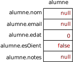

Registres
Com sabem, els programes manipulen dades. Aquestes dades, de vegades, són independents entre si.
Per exemple, considera el següent exercici com a exemple:
 Exercici 33_07. Classificador de matrícules
Exercici 33_07. Classificador de matrícules
En l'exercici anterior, les diferents matrícules no estan relacionades entre si. És a dir, una matrícula és independent de la resta.
D'altres vegades, però, les dades estan relacionades entre si. Per exemple, el contingut de les caselles d'un taulell de tres en ratlla, o els valors del dia, mes i any d'una data.
En el primer cas, es tracta de
nou valors que composen una situació concreta del joc. Cada element té un
significat independent, és clar, però estaràs d'acord amb mi que,
malgrat els següents dos taulells tenen el mateix valor per la casella (0,
0), no signifiquen el mateix.
{kind=link}
De la mateixa manera, en les dates 29 d'octubre 1995 i 29 de febrer
de 2001, coincideixen en el valor del dia (29) però no signifiquen
el mateix. En el segon fa la data errònia!
Els dos exemples tenen, però, una cosa en comú: els diferents elements són del mateix tipus i, per tant, es poden codificar amb un array.
Hi ha la possibilitat de que tinguem dades relacionades entre sí que no siguin del mateix tipus? La resposta és, és clar, sí.
Agrupacions de diferents tipus de dades
Ja n'hem vist d'exemples. Un de recent va ser el de l'exercici en que vam treballar el format csv.
En aquella ocasió, cada línia del fitxer de notes.csv contenia el nom
d'un alumne i les 6 notes corresponents a les unitats formatives del mòdul
de programació.
$ cat notes.csv
alumne,uf1,uf2,uf3,uf4,uf5,uf6
Eleftèria Ortiz Luján,7,8,5,7,8,9
Daniel Carrasco Macadàmia,5,4,5,2,NP,NP
Gabriela Cirerer Nasal,6,7,5,8,9,5
Mentre que les notes les podem representar amb un array d'enters, no tenim manera de vincular el nom amb les notes dins del mateix array.
Això ens obliga a fer servir trucs més o menys hàbils. Per exemple, podem tenir els noms dels alumnes en un array de String, i les notes en una taula d'enters, de manera que la posició dins l'array de noms d'un alumne correspongui amb la fila de la taula de notes del mateix alumne.
El següent diagrama representaria aquestes estructures de dades:
Nota: he codificat el valor de no presentat o NP com un -1
per simplicitat, ja que és molt fàcil de codificar com un enter.
Així, si volem saber la nota de la UF3 de l'Eleftèria, com que el nom de
l'alumna es troba a la posició 0 de l'array noms, les seves notes
es trobaran a la fila 0 de l'array notes i la nota de la UF3
correspondrà amb la tercera columna. Per tant, la nota serà
notes[0][2] que va ser un 5.
Si volguéssim fer un programa que ens digués una nota d'un alumne a partir
del seu nom, ens tocaria cercar el nom a noms i, si hi és, a partir de
la posició del nom, trobaríem la fila on es troben les notes. De la
mateixa manera, si ens interessés saber quins alumnes han suspès alguna
UF, hauríem de recórrer totes les notes de notes i, cada cop que
trobem una amb valor inferior a 5, agafaríem la fila de la nota i
indexaríem amb ella l'array noms per obtenir el nom de l'alumne.
Què passaria si les dades per cada alumne incloguessin altres elements com ara, el correu electrònic, l'edat, si ve d'oient…? Doncs bàsicament que hauríem de disposar d'arrays per cadascuna de les dades de tipus diferent i assegurar-nos que cada posició correspon al mateix alumne.
No seria més còmode disposar d'una mena d'array que ens permetés agrupar dades de diferents tipus, en comptes de tenir-les així de disperses?
Els llenguatges de programació solen oferir mecanismes per realitzar aquesta agrupació. En el cas de Java, la realitzarem mitjançant una classe[1]. Fixa't en el següent fragment de codi:
static class Alumne {
String nom;
String email;
int edat;
boolean esOient;
int[] notes;
}
Fixa't que no he posat public davant de class però sí static.
D'aquesta manera, Java ens permetrà incloure aquest fragment de codi dins
la classe del nostre programa:
public class GestionaAlumnes { static class Alumne { String nom; String email; int edat; boolean esOient; int[] notes; } public static void main(String[] args) { // … } }
Per representar la nostra companya Eleftèria, fent servir aquesta classe, farem el següent:
1Alumne alumne = new Alumne();
2alumne.nom = "Eleftèria Ortiz Luján";
3alumne.email = "elefteria.ortiz@mevaempresa.org";
4alumne.edat = 19;
5alumne.esOient = false;
6alumne.notes = new int[] { 7, 8, 5, 7, 8, 9 };
En primer lloc hem declarat una variable anomenada alumne de tipus
Alumne. Potser et sorprèn que puguem fer servir el que acabem de crear
com si fos un tipus més. En el fons és el que és!
En la mateixa línia inicialitzem la variable alumne amb el resultat de
l'expressió new Alumne(). Aquesta expressió reservarà un espai en
memòria suficient com per poder guardar totes les dades de que es composa
un Alumne. A banda d'aconseguir aquest espai, resultarà en una
referència a la posició de memòria on es troba. Aquesta referència és el
valor que acaba prenent la variable alumne. És una referència i no un
valor directament perquè Alumne no és un tipus primitiu.
Cal tenir clar que amb la primera línia només tenim reservat un espai per poder emmagatzemar les dades que corresponen a un alumne però no tenim les dades de l'alumne!
{kind=link}
És el mateix que passava quan inicialitzavem un array: el seu contingut
encara no existia. Així, en crear l'alumne, els seus camps han obtingut
els valors base. Per exemple, l'edat serà 0, esOient serà false i
la resta serà null.
A aquest espai reservat per contenir les dades d'un alumne, li direm
instància. Així, la referència que assignem a la variable alumne és
una instància de tipus Alumne, com "Eleftèria Ortiz Luján" és
una instància de String.
A continuació hem inicialitzat els diferents camps o característiques de la nostra companya.
Si recordes, per accedir als valors d'un array, havíem d'indexar-lo.
Per exemple, noms[2] es refereix al tercer element de l'array
noms.
Per accedir als valors de les diferents propietats vindria a ser quelcom
similar. La diferència és que els elements que composen l'alumne no els
indexem per posició sinó pel nom de la propietat. La notació en Java per
indexar és fer servir el punt seguit del nom de la propietat:
alumne.nom.
Tal i com tenim definit Alumne, podem consultar el valor d'un camp i
modificar-lo, fent servir la mateixa notació del punt.
Podríem representar aquesta instància d'aquest Alumne de la següent
manera:
Així, si per exemple, volem accedir a la nota de la UF3 simplement hem de
fer servir l'expressió alumne.notes[2].
Mòduls associats
Quan definim un nou tipus de dades, sovint hi ha una sèrie de mòduls que ens seran útils per manipular aquestes dades.
Constructor
Un dels més típics és l'inicialitzador o més comúnment anomenat constructor. Es tracta d'un mòdul que en cridar-lo, ens retorna una instància amb els valors desitjats.
public static Alumne construeixAlumne(String nom, String email,
int edat, boolean esOient,
int[] notes) {
Alumne alumne = new Alumne();
alumne.nom = nom;
alumne.email = email;
alumne.edat = edat;
alumne.esOient = esOient;
alumne.notes = notes;
return alumne;
}
Així, podríem crear una nova instància per la nostra estudiant Eleftèria de la següent manera:
Alumne alumne = construeixAlumne("Eleftèria Ortiz Luján",
"elefteria.ortiz@mevaempresa.org",
19,
false,
new int[] { 7, 8, 5, 7, 8, 9 });
Nota: fixa't que l'hem anomenat construeixAlumne() i no
contrueix(). En indicar que el que construeix és Alumne, evitem
problemes si el nostre programa també ha de construir altres tipus nous
com ara Docent, Classe, etc.[2]
De moment, seguirem aquest patró d'anomenament de mòduls associats.
Mostrar valors
Per poder veure el contingut d'un alumne, haurem de mostrar cadascun dels seus camps. Una manera seria:
public static void mostraAlumne(Alumne alumne) {
System.out.println("Alumne: " + alumne.nom);
System.out.println("- email: " + alumne.email);
System.out.println("- edat: " + alumne.edat);
System.out.println("- és oïent: " + (alumne.esOient?"Sí":"No"));
System.out.println("- notes: " + notesACsv(alumne.notes));
}
En cridar-lo, si definim adequadament la funció String
notesACsv(int[]), ens treurà per sortida estàndard el següent contingut:
Alumne: Eleftèria Ortiz Luján
- email: elefteria.ortiz@mevaempresa.org
- edat: 19
- és oïent: No
- notes: 7,8,5,7,8,9
Sovint és útil aconseguir la versió de l'alumne en format String per, per exemple, ajudar-nos a depurar el codi. Per exemple:
public static String alumneAString(Alumne alumne) {
return String.format(
"Alumne(nom: \"%s\", email: \"%s\", " +
"edat: %d, esOient: %b, notes: {%s})",
alumne.nom, alumne.email, alumne.edat, alumne.esOient,
notesACsv(alumne.notes));
}
En fer la crida alumneAString(alumne) sobre la instància de Eleftèria
rebrem el String:
Alumne(nom: "Eleftèria Ortiz Luján", email: "elefteria.ortiz@mevaempresa.org", edat: 19, esOient: false, notes: {7,8,5,7,8,9})
Serialització
Com que estem en el tema de persistència en fitxers, ens pot ser interessant disposar de mòduls que ens permetin convertir una instància d'alumne a quelcom que puguem guardar en un fitxer i després recuperar-lo.
Per exemple, ens pot ser interessant que les dades d'un alumne es guardin en forma línia dins d;un fitxer csv.
Així, podríem desenvolupar els mòduls següents:
public static String alumneACsv(Alumne alumne)
public static Alumne csvAAlumne(String linea)
Així, per exemple, en cridar alumneACsv(alumne) amb el valor
alumne en que havíem guardat les dades d'Eleftèria, ens retornaria:
"Eleftèria Ortiz Luján,elefteria.ortiz@mevaempresa.org,10,false,7,8,5,7,8,9"
Al procés de convertir l'alumne a una seqüència de text se li sol anomenar serialitzar, mentre que la recuperació d'una instància a partir de la seva serialització se li anomena deserialitzar.
De fet, la funció alumneAString() que hem vist abans també es una
manera de serialitzar un alumne. Segurament estaràs d'acord amb mi que
és més fàcil desenvolupar la funció de deserialització a partir de un csv
que del resultat de alumneAString().
Arrays d'alumnes
Un cop disposem del tipus Alumne podem fer coses tan interessants com
crear un array d'alumnes!
Alumne[] alumnes = new Alumne[3];
És clar que totes les posicions d'aquest array tenen com a valor null
de moment.
Podem donar-li d'alta nous valors:
alumnes[0] = alumne; // aprofitem la instància d'Eleftèria
alumnes[1] = new Alumne(); // un alumne buit
alumnes[1].nom = "Daniel Carrasco Macadàmia";
alumnes[1].email = "daniel.carrasco@mevaempresa.org";
alumnes[1].edat = 21;
alumnes[1].esOient = true;
alumnes[1].notes = new int[] { 5, 4, 5, 2, -1, -1 };
alumnes[2] = construeixAlumne("Gabriela Cirerer Nasal",
"gabriela.cirerer@mevaempresa.org",
20, false,
new int[] {6, 7, 5, 8, 9, 5});
Per accedir a la nota de la UF3 d'Eleftèria, ara també ho podem fer a
partir de l'array alumnes amb l'expressió alumnes[0].notes[2].
De fet, podríem mostrar les notes de la UF3 per tots els alumnes amb el bucle:
for (int i=0; i<alumnes.length; i++) {
System.out.printf("La nota de la UF3 de %s és %d%n",
alumnes[i].nom,
alumnes[i].notes[2]);
}
No està malament, oi?